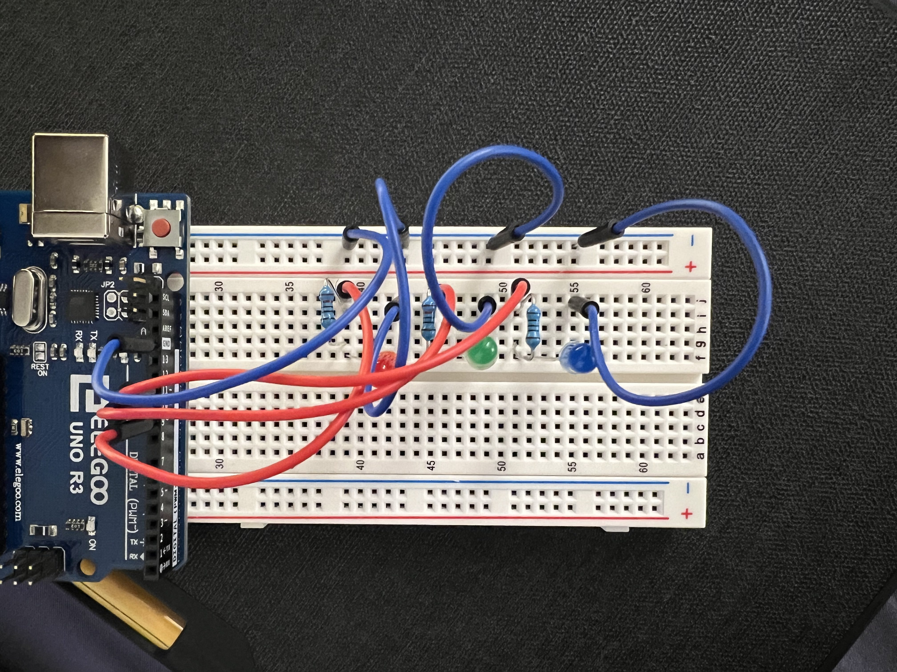
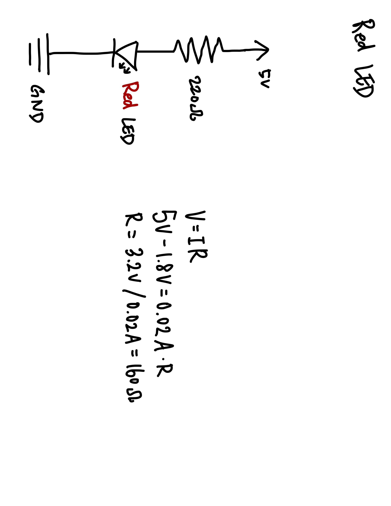
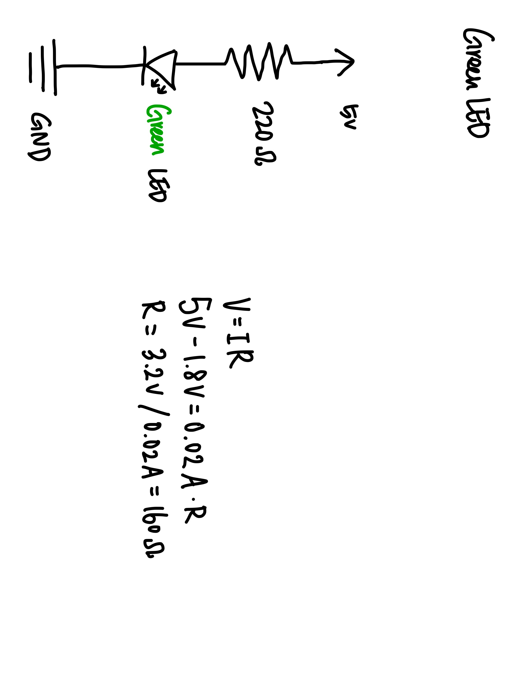
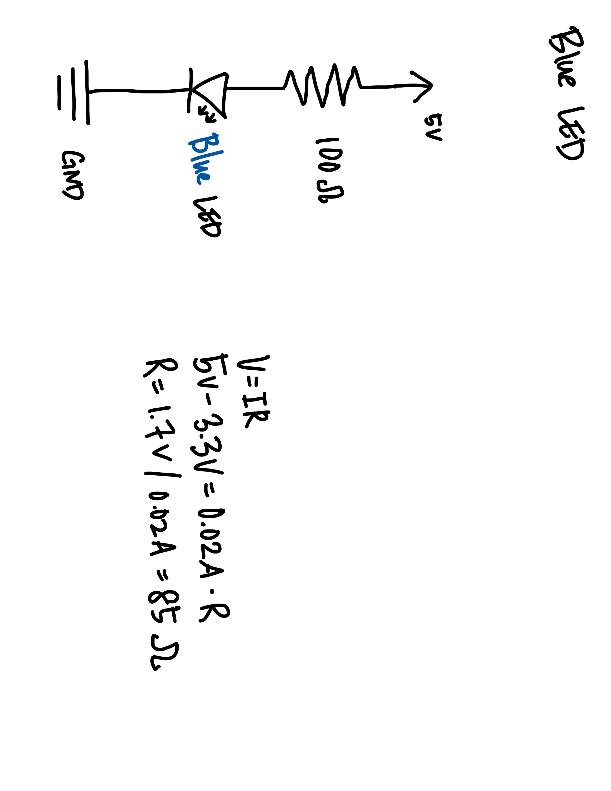

David's Assignment 1: Blink!

Cirucuit!

Schematic - Red

Red LED has a voltage drop of 1.8V. Optimal resistance is 160 ohms, so I used a 220-ohm resistor to be safe.
Schematic - Green

Green LED has a voltage drop of 1.8V. Optimal resistance is 160 ohms, so I used a 220-ohm resistor to be safe.
Schematic - Blue
Blue LED has a voltage drop of 3.3V. Optimal resistance is 85 ohms, so I used a 100-ohm resistor to be safe.

Code:
void setup() {
pinMode(9, OUTPUT); // initialize digital pin 9 as an output. This is the Red LED.
pinMode(10, OUTPUT); // initialize digital pin 10 as an output. This is the Green LED.
pinMode(11, OUTPUT); // initialize digital pin 11 as an output. This is the Blue LED.
}
void loop() {
int delayTime = 1000; // create an int variable to be used for delay. Resets the variable after the while loop.
while (delayTime > 0.1) { // Repeat the sequence of blinking.
digitalWrite(9, HIGH); // turn the Red LED on.
delay(delayTime); // wait for a little bit.
digitalWrite(9, LOW); // turn the Red LED off.
digitalWrite(10, HIGH); // turn the Green LED on.
delay(delayTime); // wait for a little bit.
digitalWrite(10, LOW); // turn the Green LED off.
digitalWrite(11, HIGH); // turn the Blue LED on.
delay(delayTime); // wait for a little bit.
digitalWrite(11, LOW); // turn the Blue LED off.
delayTime = (delayTime/1.2); // reduce the delay after every loop
}
}